⚠ Defeitos
Identificação, causas e soluções para os principais defeitos de recravação dupla.

Recravação Falsa (False Seam)
Um dos defeitos mais criticos. Ocorre quando o curl da tampa nao enrola corretamente com o flange do corpo.
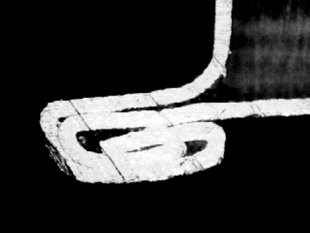
Recravação Partida (Split Seam)
Abertura na recravação que compromete a hermeticidade da lata.
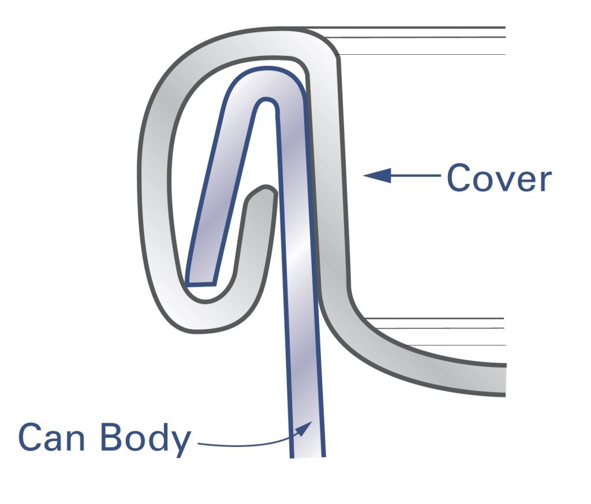
Recravação Saltada (Sprung Seam)
A A recravação saltada ocorre quando a recravação salta para fora do perfil correto.
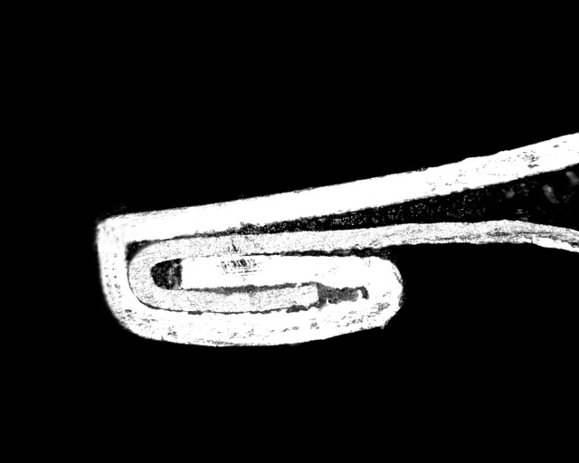
Recravação Afiada (Sharp Seam)
recravação com perfil afiado, geralmente causada por chuck danificado.
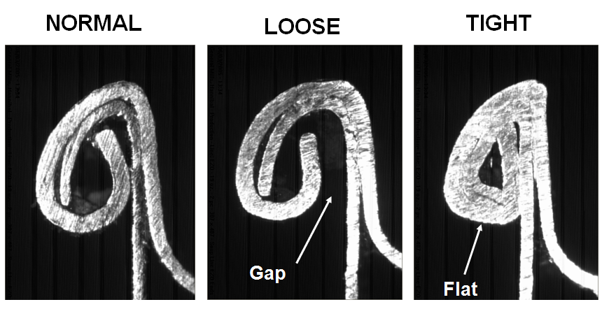
Primeira Operação Frouxa
Quando a primeira operação nao forma o gancho corretamente - recravação frouxa.
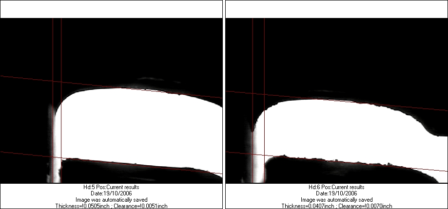
Segunda Operação Frouxa
Segunda operação com folga excessiva resulta em recravação frouxa.
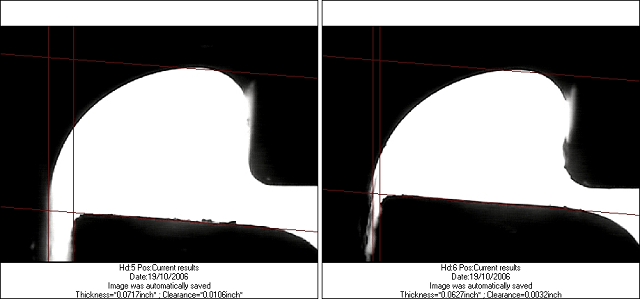
Primeira Operação Apertada
Primeira operação com pressão excessiva causa danos à recravação.
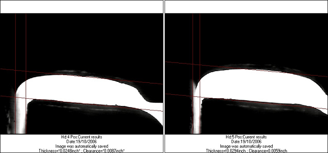
Segunda Operação Apertada
Segunda operação com excessiva resulta em recravação apertada.
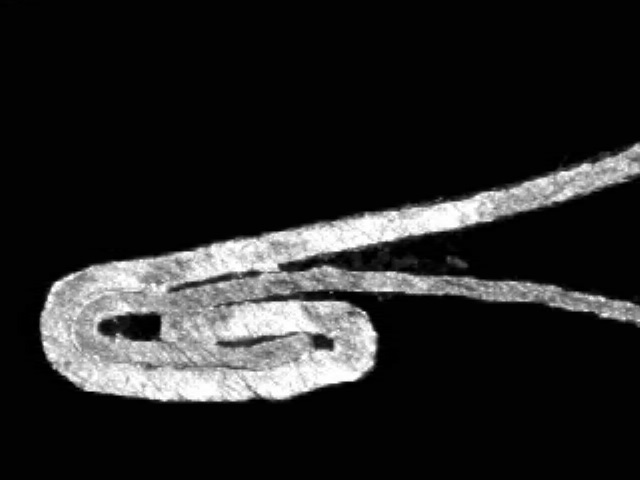
Amassos na Recravação (Seam Bumps)
Amassos ou deformações na recravação - identificação e causas.
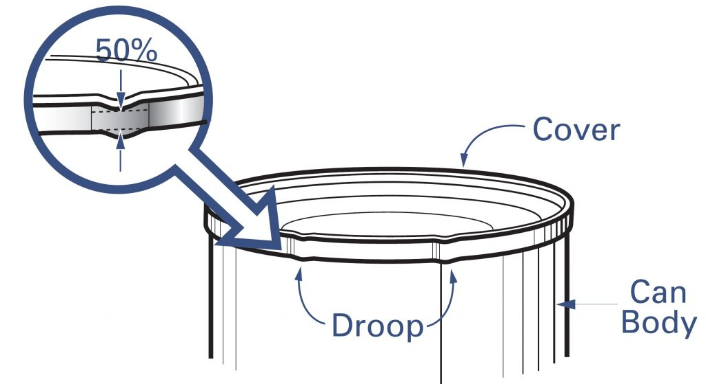
Quedas de Recravação (Droops)
Deformação para baixo na - causas e prevencao.
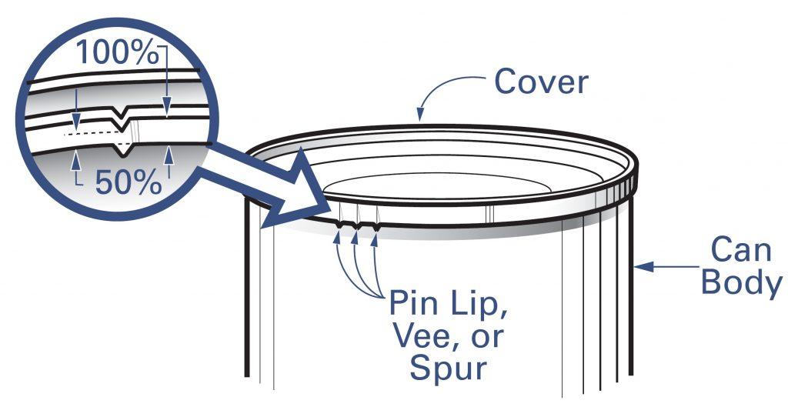
V's (Vees)
Defeito em forma de V na recravação - identificacao e causas.

Ruga na Recravação (Wrinkle)
Rugas no gancho da tampa indicam compressão excessiva do curl.

Classificação de Ruga (Wrinkle Rating)
Como classificar a severidade das rugas na recravação.

Espora (Spur)
Protuberancia na recravação causada por problemas no ferramental.
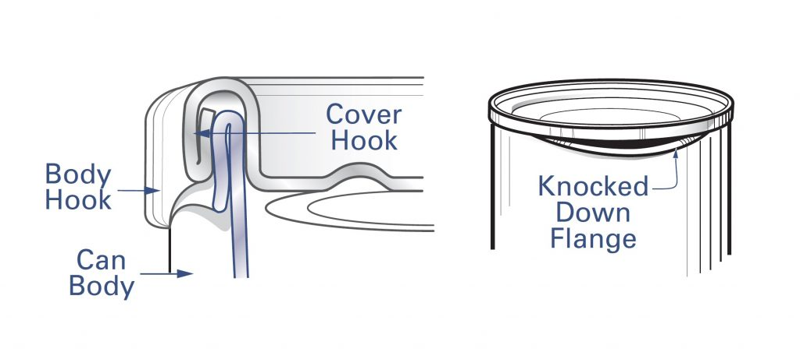
Flange Amassado (Knockdown Flange)
Flange dobrado antes da recravação - causas e impacto na recravação dupla.

Afundamento Profundo (Deep Countersink)
Afundamento excessivo da tampa pode causar problemas na recravação.
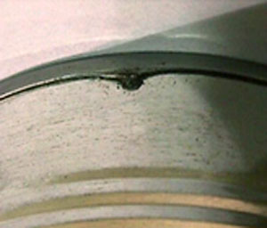
Retenção de Produto (Product Entrapment)
Produto preso na recravação - como ocorre e como prevenir.
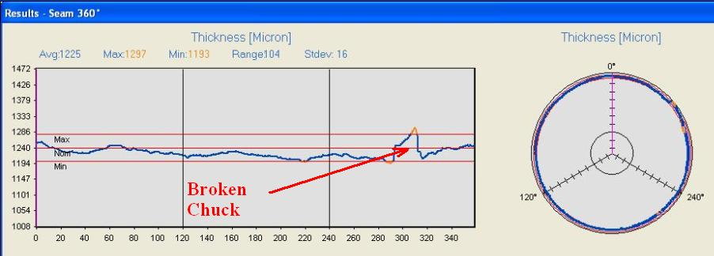
Chuck Rachado
Chuck com trincas ou rachaduras compromete a qualidade da recravação.
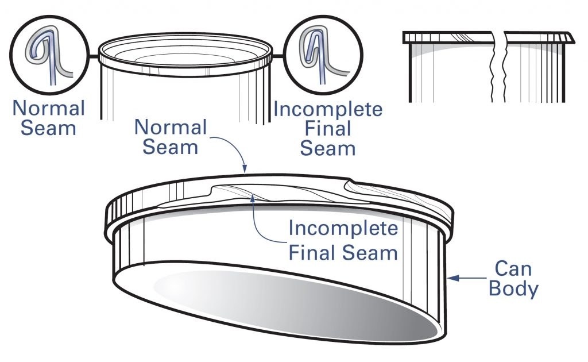
Tampa Solta (Deadhead)
Tampa nao recravada ou incorretamente recravada - deteccao e prevencao.

Rolo de Recravação Erodido
Desgaste do rolo de recravação e seu impacto na qualidade da recravação.

Espessura de Recravação Frouxa
Espessura abaixo do especificado.

Espessura de Recravação Apertada
Espessura acima do especificado.

Comprimento de Recravação Curto
Altura da recravação abaixo do especificado.

Comprimento de Recravação Longo
Altura da recravação acima do especificado.

Sobreposição Baixa
Sobreposição abaixo do mÃnimo - alto risco.

Gancho do Corpo Curto
Gancho abaixo do minimo especificado.

Gancho do Corpo Longo
Gancho acima do maximo especificado.

Gancho da Tampa Curto
Gancho da tampa abaixo do minimo especificado.

Gancho da Tampa Longo
Gancho da tampa acima do maximo especificado.

Sobreposição Alta do Gancho do Corpo
BH Butting acima do maximo especificado.
Sobreposição Baixa do Gancho do Corpo
BH Butting abaixo do minimo especificado.

Folga Alta da recravação
Folga acima do especificado - analise e causas.

Folga Frouxa da recravação
recravação com folga excessiva.
Espaço Livre Alto
Freespace acima do limite especificado.
Espaço Livre Baixo
Freespace abaixo do limite especificado.